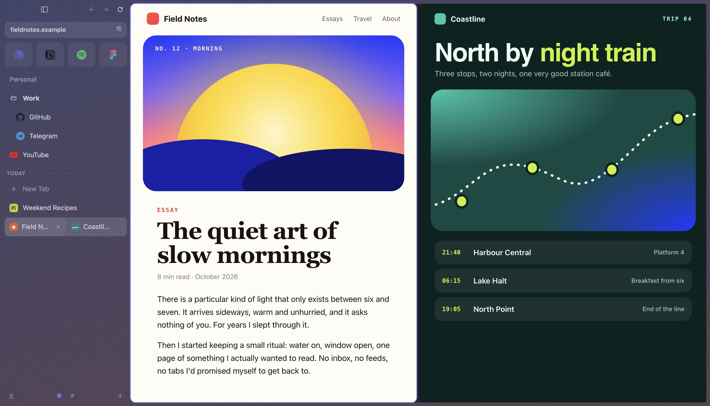

What's the catch?
There isn't one. Meridian is free and open source under the MIT license. No subscription, no account, no ads.
Spaces, pinned tabs, split view and the command bar, right where your hands expect them. Your whole Arc sidebar moves in with one click.
Download MeridianSeparate spaces for work and life, each with its own colour and logins. Swipe between them.
Swipe sideways with two fingersSwipe sideways
Spaces, colours, pinned tabs, folders and favorites move over on first launch.
Tabs you haven't touched in a while go to the archive. Pinned ones stay. Nothing is lost.
Click a tab to use it
Two pages side by side. Or check a link in a quick preview, no new tab needed.
Summarize it, translate it, restyle it, or just ask, right from the command bar. Bring your Claude API key, GitHub Copilot or a free local model.
Ads and trackers are blocked from the first launch. No account, no telemetry. What’s yours stays on your computer.
Free. No account, no sign-up.
Apple silicon (M1 and newer). Signed by Apple.
brew install --cask undermove/tap/meridianWindows may show a blue warning the first time. It does that for every app without a Microsoft certificate, and we don't have ours yet.
Meridian runs on macOS and Windows today. Linux comes later.

There isn't one. Meridian is free and open source under the MIT license. No subscription, no account, no ads.
Everything that matters: spaces, pinned tabs, folders, favorites, history, boosts, saved passwords and cards. You stay signed in too, because Meridian copies Arc's cookies into the matching profiles (on a Mac, after you allow the keychain prompt). Nothing leaves your computer and Arc isn't changed. On Windows, quit Arc first. Coming from Chrome? File › Import from Chrome does the same for your profiles.
Macs with Apple silicon (M1 and newer) and Windows 10 and 11. Intel Macs and Linux aren't supported yet.
Nothing. There is no account, no server and no telemetry. AI features talk only to the AI you connect.
Windows shows that warning for every app without a Microsoft certificate, and we don't have ours yet. Click "More info", then "Run anyway". Macs show no warning: Meridian is signed and checked by Apple.
No sync and no password manager of its own yet, and the Windows build has had less testing than the Mac one. We'd rather tell you now.